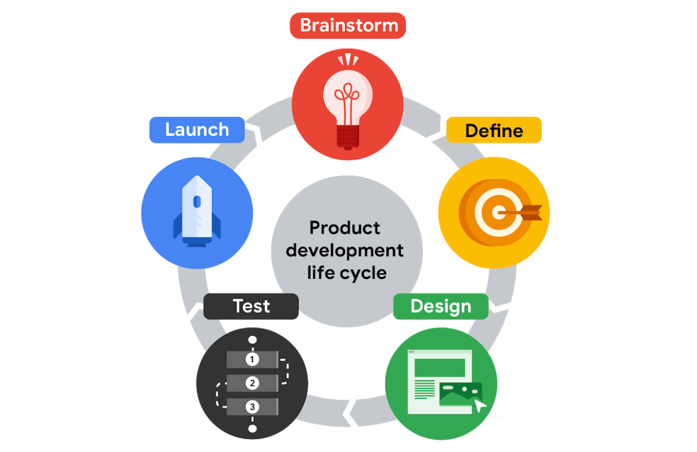
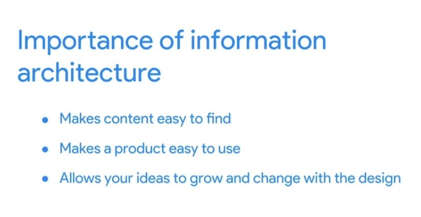
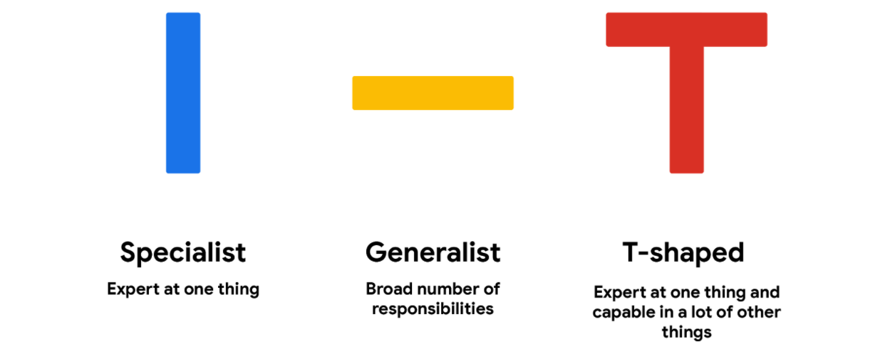
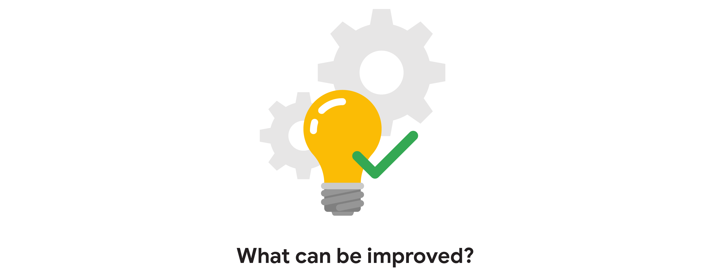

Foundations of User Experience (UX) Design
Introducing user experience design
- Interaction Design Foundation : A library of open-source UX design resources, including new articles published every day. There are also local meet-ups (virtual and in-person) that are free to attend and open to everyone.
- Adobe XD Ideas : A blog curated for entry-level UX designers. You’ll find inspiring examples of great design, valuable career tips, and more.
- UX Collective on Medium: An article platform with stories on user experience, visual design, product design, and more. Articles on Medium are written by a large variety of writers and cover a range of topics.
- Nielsen Norman Group : Research-based UX guidance, including a ton of helpful articles about the design process, research methods, and user testing, which you'll learn about later in the certificate program.
UX designers help make technology easier to understand and more enjoyable to use. The user experience is how a person, the user, feels about interacting with or experiencing a product. A product is a good, service, or feature. It might be a physical product or a technology product.
For a user to have a good experience, the product needs to be usable, equitable, enjoyable, and useful. This means that the design, structure, and purpose of the product are clear to everyone. UX designers need to think about every person who uses the product. This might include people with disabilities, or people with very different life experiences from your own. For example, one user might find an app with a lot of text easy to use. On the other hand, a user with a visual impairment might want different features like sound.
Equitable design is key.
Being equitable means your designs are useful and marketable to people with diverse abilities and backgrounds. User experience is also about making things enjoyable to use, which creates a positive connection between the user and the product.UX designers foster that positive connection by taking a user's thoughts and feelings into account when making products. We want products that are useful, meaning they solve our problems.
UX designers are empathetic. Empathy is the ability to understand someone else's feelings or thoughts in a situation, understand how a person might feel or what they might think in any situation.
When you think of the word "design," you might think it's all about the visual aspects of a product. But it's only one small part of what the UX designers might do. In fact, there are many different kinds of UX designers: interaction designers, visual designers, and motion designers.
Interaction designers, focus on designing the experience of a product and how it functions. They figure out how to connect the users' needs and the business's goals with what's actually feasible to build,responsible for defining the user experience for security and privacy related tools. Users always come first.
Visual designers who focus on how a product or technology looks, responsible for designing logos, illustrations, or icons, decide font color and size, or work on product layouts.
Motion designers are another common type of UX designer, think about what it feels like for a user to move through a product and how to create smooth transitions between pages on an app or a website.
Virtual reality (VR) and augmented reality (AR) designers create products that provide users with immersive experiences, unbounded by the limits of the physical world. Virtual reality involves a wearable headset that takes over a user’s vision; it blocks out their physical surroundings and immerses them in a completely virtual world. Augmented reality uses the physical world as a backdrop and adds virtual elements on top of it. Users are still contextually aware of their surroundings, but their reality is augmented, or enhanced, by adding elements through a screen. A VR or AR designer’s work answers questions like: How do we create a user experience that leverages 3D space? Or, will this action cause a user motion sickness? To ensure users are comfortable immersing in a VR or AR experience, designers need to carefully consider everything from sound to lighting.
graphic designers who create visuals that tell a story or message,usually work on the appearance of a physical product, like an invitation or a poster, while UX designers focus on how users interact with the product.
UX researchers conduct the studies or interviews that help us learn how people use a product.
UX writers think about how to make the language within a product clearer to make the user experience more intuitive, could include writing labels for buttons or adjusting the tone to be formal or friendly.
Production designers, who often act as a bridge between interaction designers and engineers, make sure the first and final designs match in the finished product materials and that the assets are ready to be handed off to the engineering team. The assets are everything from text and images to the design specifications, like font style, color, size, and spacing.
UX engineer translate the design's intent into a functioning experience, like a website or an app.
UX program managers ensure clear and timely communication so that the process of building a useful product moves smoothly from start to finish. This might include setting up goals and writing project plans.
Conversation designers make it possible for users to have natural conversations to get things done. They leverage user research, psychology, technical knowledge, and linguistics to create user experiences that are intuitive and engaging. Conversation designers develop the “persona” or personality of the voice, as well as the flow and dialog of the interaction. Conversation designers answer questions like: What’s the ideal language and flow based on who users are, the task to be accomplished, and the context of the conversation? Does the personality of the virtual assistant seem genuine, engaging, and reflective of the brand values? How does the conversation work with on-screen elements? Does the virtual assistant offer a consistent, usable, and useful experience end-to-end?
The product development life cycle
Every new product, whether it’s an app or a physical object, follows a specific set of steps that take it from the first spark of an idea to the release of the final product. This is called the product development life cycle, and it has five stages:
-
brainstorm
Team starts thinking of an idea for a product, might already know the user problem that you want. If not, coming up with a list of user problems is a great place to start. The brainstorm stage is also an ideal time to check out your product's competitors and identify if there are already similar products available in the market. You want your product to fill a gap in the market or solve a problem better than existing products. Completing research into both your competitors and your users helps determine what problems need to be addressed by the product’s design.
-
define
The goal is to figure out the specifications for the product by answering questions like: Who is the product for? What will the product do? And, what features need to be included for the product to be successful? Narrows the focus of your idea. One product can’t solve every user problem. UX designer might help the team pin down the focus of the idea, but a product lead will probably be the one to define the scope of the project. The research you completed in the brainstorm stage comes in handy. Using what you've learned, you will pinpoint your potential users’ problems.
-
design
UX designers develop the ideas for the product. Generally, UX designers start by drawing wireframes, which are outlines or sketches of the product, then move on to creating prototypes, which are early models of a product that convey its functionality. UX writers are also involved in the design stage and might do things like write button labels or other copy within the product's wireframes and prototypes. At this point in the life cycle, UX designers make sure to include all of the product specifications that were outlined in the define stage, check to ensure that each part of the design fits together in an intuitive way, check that one piece of a physical object matches up to the connecting piece. Finally, UX designers also make sure that each task a user needs to complete is clear and easy to understand, like navigating from the homepage to the checkout confirmation page in an app.
-
test
UX designers work with engineers to develop functional prototypes that match the original designs, including details and features that fit the company’s brand, like font and color choices. This also means writing the code and finalizing the overall structure of the product. Or, if you want to test your designs earlier, another option is to test a functioning prototype of the product, using a design tool like Figma or Adobe XD. At this stage, the designs go through at least three phases of testing: internal tests within your company, reviews with stakeholders, and external tests with potential users. Running these tests is typically the responsibility of the UX researcher on your team. First, the team tests the product internally to look for technical glitches and usability problems. This is often referred to as alpha testing. Then, the product undergoes a test with stakeholders to make sure the product is aligned with the company’s vision, meets legal guidelines for accessibility, and follows government regulations for privacy, for example. Finally, there’s an external test with potential users. This is the time to figure out whether the product provides a good user experience, meaning it’s usable, equitable, enjoyable, and useful. This is often referred to as beta testing. Gathering and implementing feedback at this stage is absolutely critical. If users are frustrated or confused by your product, UX designers make adjustments or even create new versions of the design. Then, the designs are tested again, until there’s little or no friction between the product and the user.
-
launch
The product is released into the world! This might involve listing an app in the Google Play Store or Apple’s App Store, making a website go live, or putting a physical product on store shelves. The launch stage is a time to celebrate your work and start promoting the product. Marketing professionals on your team might post about the new product on social media or publish a press release. The customer support team might get ready to help new users learn how the product works. Program managers also meet with the cross-functional team to reflect on the entire product development life cycle and ask questions like: What worked and what could be improved? Were goals achieved? Were timelines met? Making time for this reflection is super important, since it can help improve the process going forward. For a physical product, the launch stage might be the end of the product development life cycle. But for a digital product, like an app or website, launching the product to a wider audience provides another opportunity to improve on the user experience. New users might find problems with the product’s functionality or features to improve that no one noticed before. So, after the launch stage, teams will often cycle back to the design and testing stages to start working on the next version of a digital product.
It’s important to call out that the product development life cycle isn’t a completely linear process. Your team might cycle between designing and testing a few times before you're ready to launch the product!
Characteristics of a good user experience
-
usable
the design, structure, and purpose of the product is clear and easy to use. As you evaluate a product for usability, you can ask questions like: Is everything in the design easy to find? Is the design’s functionality easy to understand? Can users accomplish specific tasks within the design? As you evaluate, these questions can help you determine whether the design delivers a usable experience.
-
equitable
design is helpful to people with diverse abilities and backgrounds, the product’s design addresses the needs of a diverse audience and ensures a high-quality experience is delivered to all users regardless of background, gender, race, or ability. Equity means providing people with the tools they need to accomplish their goals and support improved quality of life. Equity goes beyond the concept of equality, where everyone is given equal resources, because people often need different tools and support based on their needs. This is especially important to keep in mind for those in commonly disenfranchised groups. As you evaluate the equity of a product’s UX, you can ask questions like: Are the needs of a diverse group of users considered? Does the product’s design address the needs of traditionally underrepresented and excluded groups? These questions can help you determine whether the design delivers an equitable experience.
-
enjoyable
design delights the user, reflects what the user may be thinking or feeling and creates a positive connection with them. A product’s design doesn’t have to be enjoyable for it to function properly. But, an enjoyable design adds to an already functional product and can enhance the user’s feelings about the experience. As you evaluate how enjoyable a product’s UX is, you can ask questions like: Are there aspects of the design that consider the user’s feelings? Does the design inspire delight in the user? Does the design keep the user engaged throughout their experience?
-
useful
it solves user problems, the design intentionally solves a user problem that the designer has identified. It’s important to note that, while similar, useful and usable have different meanings. A product that is useful isn’t always usable. The same is true for the opposite. The distinction between the two is that usability refers to the product working well and being easy to use, while usefulness refers directly to the ability to solve user problems. As you evaluate how useful a product’s UX is, you can ask questions like: Does the design add value to the user’s experience? Does the design solve a problem for the user? Does the design help the user achieve a specific goal? These questions can help you determine whether the design delivers a useful experience.
Job responsibilities of entry-level UX designers
typical responsibilities of entry-level UX designers:
-
researching
use research to understand audiences and learn about their backgrounds; demographics, like age and location; motivations; pain points; emotions; and life goals. There's a lot to learn about users and their preferences, and UX designers want to discover as much as they can in order to inform their product's design
-
wireframing
A wireframe is an outline or a sketch of a product or a screen. It helps the designer figure out how a page is arranged, where each piece of a product fits in with the others, and how users will likely interact with the product. Wireframing is one of the first steps designers take when building a new product or feature. It's done after or at the same time as the research. We can wireframe by drawing on paper or digitally on a computer.
-
prototyping
is an early model of a product that demonstrates functionality, like a wireframe, but a lot more advanced. While a wireframe gives you a general idea of where things go and how the product will function, a prototype illustrates a progression from one screen to the next. We can draw our prototypes on paper, create a physical prototype, or build a digital prototype.
The purpose of wireframes and prototypes is to figure out the best design for a product inexpensively and quickly. Another responsibility of an entry-level UX designer might include creating the information architecture, which is the framework of a website, or how it's organized, categorized, and structured.
-
creating information architecture
 -
communicating effectively
meetings with colleagues, writing emails, creating proposals, or pitching clients. In short, entry-level UX designers should know how to research, wireframe, prototype, create information architecture, and communicate effectively.
Responsibilities of an entry-level UX designer
- User research: User research is about understanding the people who use your product. Through research, you’ll learn about users’ backgrounds, demographics, motivations, pain points, emotions, and goals. Your research methods might include surveys, observations, and interviews. We’ll explore user research in much more detail in an upcoming course.
- Information architecture: Information architecture, or IA for short, involves deciding how your product is organized and structured. Think of IA as a skeleton that outlines how users interact with your product. Everything in your product should be organized in ways that make sense to the user and meets their expectations.
- Wireframing: A wireframe is a basic outline or sketch of a product or a screen, like an app or website. As the name suggests, wireframes look like they were created with wires. They’re mostly lines and shapes, with some text. Wireframes can be drawn by hand or created digitally using software. Wireframing helps you bring your design ideas to life, so other people on your team can provide input and feedback.
- Prototyping: A prototype is an early model of a product that demonstrates its functionality. Prototypes can be in physical or digital formats and can vary in complexity. Sometimes a prototype is made to demonstrate one specific feature of a product, like the transition between screens or the way the product physically looks and feels. You’ll make multiple prototypes for any given product throughout the design process.
- Visual design: Visual design focuses on how the product or technology looks. As a UX designer, you need to understand the foundations of visual design in order to communicate the connection between a product’s functionality and its appearance to users. You’ll learn some of the most important principles of visual design throughout this certificate program.
- Effective communication: Effective communication as a UX designer means connecting with your colleagues through emails, meetings, presentations, and design software. UX design is a very collaborative field, so being able to communicate both digitally and face-to-face with teammates is important. You need to be a good listener, be receptive to feedback, and share your ideas in a clear way.
Specialist and generalist designers
Specialist
A specialist dives deep into one type of UX design, like interaction, visual, or motion design, and becomes an expert. Specialist UX designers are more common at large companies that have a lot of designers, like here at Google. Some of the benefits of becoming a specialist include:
- Focusing on one type of design that you enjoy more than others.
- Gaining deep knowledge of one type of design
- Becoming well-known in the industry for your expertise in a particular type of design
Generalist
A generalist has a broad number of responsibilities. A majority of UX design jobs are generalist positions, especially at companies with fewer UX designers. Typically, entry-level UX designers work in generalist roles, and some people choose to stay in generalist design roles for their entire careers. There are a lot of benefits to being a generalist UX designer, like
- Expanding your skills in many different types of UX work.
- Trying a variety of responsibilities and finding an area of UX that you’re especially passionate about.
- Keeping your job feeling fresh and new, while doing a variety of tasks
T-shaped
A T-shaped designer is a specialist who also has a lot of capabilities in other areas. T-shaped designers get their name because the stem (or vertical line) of a T represents their expertise in one area, while the top (or horizontal line) symbolizes their related skills in a broad number of areas. T-shaped designers are great to have on your team, since they come with the benefits of both specialists and generalists
Interact with cross-functional teammates
-
Engineers
Engineers translate designs into a functioning experience, like an app or a website. They help UX teams figure out if designs are feasible from a technical standpoint and bring that idea to life. Working closely with engineers and involving them early in the design process is critical to ensure your project is set up for success.
-
UX researchers
UX research is all about understanding what users need and expect from your product. UX researchers use methods like observations, interviews, and surveys to understand users' unique perspectives. Findings from research can inform your design decisions each step of the way. If you work at a startup or small business, there’s a good chance you’ll get to do your own UX research. At larger companies though, you’ll likely work with designated UX researchers who will provide research findings to inform your design work.
-
Program managers
Program managers ensure clear and timely communication across the team, so that the process of building a useful product moves smoothly from start to finish. Program managers supervise, support, and keep track of the project as a whole. They assign tasks to team members, monitor the project budget, and manage timelines, among other things. Think of your team’s program manager as your go-to source of support when facing any setbacks or issues with your work.
-
Product leads
Product leads are in charge of ensuring the final product’s success and communicating with stakeholders. Your product lead will define the project’s core goals and deliverables, so you can focus on creating innovative design solutions. At some companies, product leads are known as product managers.
-
Other UX designers
In many cases, you won’t be the sole designer working on a given project, especially if you work at a larger company and when you're a new designer. For example, as an entry-level UX designer, you might collaborate with a more experienced visual designer who can ensure that your designs adhere to the company’s brand standards for things like color and font. Working with other designers is a great chance to learn and ask questions!
The influence of company size and industry
-
Startups and small businesses
Advantages
- Team size: Close-knit team and able to work directly with upper management.
- Growth: Opportunity for growth due to taking on many responsibilities (visual design, interaction design, user research, and more).
- Creativity: Usually more creative freedom with fewer guidelines and processes.
- Impact: Lots of impact on final products, with few people working on a project.
Disadvantages
- Mentorship: Fewer mentors to choose from within a smaller company.
- Responsibility: Most of the responsibility for a UX project falls solely on you, which can be stressful if you have little UX experience.
- Speed: Have to be comfortable working quickly and launching work that isn’t perfect, with little oversight.
-
Big companies
Advantages
- Mentorship: A variety of experienced designers and other UXers to learn from.
- Growth: Lots of opportunity for growth because there are many levels of designers and management.
- Guidelines: Clearer guidelines to keep products uniform and on brand.
- Team size: More people working on one project, which means you’re better able to focus on your specific responsibilities.
- Specialization: Opportunity to focus on one particular area of design.
Disadvantages
- Team size: May feel less impactful or important as a contributor with lots of other designers on the project.
- Impact: May feel small at a company with so many features and products.
- Guidelines: Defined guidelines can be restrictive to creativity
-
Design agencies
Advantages
- Impact: Lots of impact on projects, if you’re the only UX designer on the team.
- Networking: Opportunity to work with senior stakeholders, different teams, and diverse clients.
- Exposure: Exposure to lots of companies and industries with different clients.
- Resume: Potential to work with large brands and display that work in your portfolio.
Disadvantages
- Mentorship: Lack of mentorship if you are the only UX designer on a project.
- Monotony: Depending on the agency, you could work only on the same type of projects.
- Ownership: Might not be able to work on a project from start to finish.
- Finished product: Products you work on might not launch, depending on client priorities.
-
Advertising agencies
Advantages
- Autonomy: Little to no middle management means more autonomy over your work.
- Learning: Opportunity to learn about other disciplines, like branding, marketing, and graphic design.
- Variety: Every project is different based on the client.
- Networking: Work with a bunch of different brands, clients, and teams.
Disadvantages
- Specialization: Wide variation in projects, so you might not be able to hone in on specific skills easily.
- Relevance: Work may often involve branding and marketing, and might not focus on UX design.
-
Freelancers
Advantages
- Schedule: Set your own hours since you’re self-employed.
- Flexibility: Can freelance while working another job or balancing competing priorities.
- Autonomy: Choose the work that you want to do.
- Experience: Build your portfolio, especially if you don’t have a full-time UX job.
Disadvantages
- Structure: No one to report to, which means you have to be responsible for getting work done on time.
- Stability: Less stable than working for a company or agency, since work is not always guaranteed.
- Business: Manage the logistics of your own business, such as filing taxes, billing clients, and more.
- Mentorship: Lack of readily available mentors since you’re working by yourself.
Get to know the user
- universal designWhen designers began considering how to include an even broader range of people in their designs, they called it universal design. Universal design is the process of creating one product for users with the widest range of abilities and in the widest range of situations. Think of it like a one-size-fits-all approach. Designers propose one solution for everyone. The problem is that when you focus on creating one solution for everyone, the designs lose their effectiveness. It's often difficult to achieve any goals with your product when you have so many intended users. One-size-fits-all, but the hat still won't fit a lot of people. Universal design had the same problem. Even though it had the intention of being inclusive, it excluded a lot of people. It turns out one-size-fits-all isn't a great solution.
- inclusive design concept of inclusive design, which focuses on finding solutions to meet different needs. Inclusive design means making design choices that take into account personal identifiers like ability, race, economic status, language, age, and gender. Inclusive design includes researchers and designers from traditionally excluded populations in the process, so they can provide their unique perspectives during all phases of the design process. If universal design is a one-size-fits-all solution, then inclusive design can be described as solve for one, extend to many. With inclusive design, you solve for one type of user, and the benefit of that solution can extend to many other types of users. Our goal as designers is to build experiences that are accessible to users with the widest range of abilities. In other words, no one should be excluded from using a product that we built because we didn't consider their needs when building it. In inclusive design, there's no such thing as normal. There's no average person or target audience that we should design for. Designing products, devices, services, or environments for people with disabilities is called accessibility. Accessibility is just one aspect of inclusive design. We'll explore accessibility in more detail later. But keep in mind that the idea of "solve for one, extend to many," only benefits the group the design was created for and existing users. Many groups are still left out. Over time UX designers realized that inclusive design wasn't always enough, and that's where we find ourselves today as equity-focused design becomes a new industry goal.
- equity-focused designEquity-focused design takes the idea of inclusive design one step further. It asks designers to focus on designing for groups that have been historically underrepresented or ignored when building products. The goal of equity-focused design is to uplift groups that have been excluded historically. In order to design with equity as a goal, we first need to know the difference between equality and equity. The two words sound similar, but they're actually two different concepts. Equality means providing the same amount of opportunity and support to all segments of society. In other words, everyone gets the same thing. Equity means providing different levels of opportunity and support for each person in order to achieve fair outcomes. Let's explore how this relates to design. Equity-focused design is a newer concept in UX, and one that we often discuss at Google. Instead of building products for groups of people who are currently being excluded, which is the goal of inclusive design, equity-focused design seeks to build products that meet the needs of specific individuals in groups who have been excluded in the past.
User-centered design
Focusing on real user problems reduces the impact of designer bias. User-centered design puts the user front and center. Focusing on the user means considering their story, emotions, and the insights you've gathered about them. To keep our focus on the user, the user-centered design process has four steps:
- understand how the user experiences the product or similar products.
- specifythe end user's needs. Based on your research, you'll narrow down which end-user problem is the most important to solve.
- design solutions to the end user's problem. This is where you'll come up with ideas for what the product might look like and actually start building the product.
- evaluate your design against your end user's needs. Does your design solve the end user's problem? You'll find out here, and you'll also do it by testing your product with real people.
It's important to keep in mind that as you go through this process, iteration is key. Iteration means doing something again, by building on previous versions and making tweaks.
Who are my users?
In the field of user experience design, the “user” comes first. A user is a person who is trying to solve a problem and is looking for a product or service to help them solve it. The user experience is the journey that the user takes with that product or service. As a UX designer, your goal is to keep the user at the center of every decision you make, and to do that, you need to get to know your user.
Most of the initial UX research that you conduct at the beginning of the project will be focused on getting to know the characteristics of your users, their goals, and their pain points. Understanding the user empowers you to design experiences that are helpful or easy to use.
One of the key challenges of getting to know your users is avoiding taking a narrow view of the user, or making assumptions about what users need based on stereotypes. Users who seem to be different from one another might actually have shared wants and needs. Make sure to step back and get a clear picture of all your potential users–which often means that you’ll need to specifically plan to address the needs of users who are often overlooked.
To reach as many users as possible, you’ll consider questions such as these as part of your user research approach:
-
Do my users have impairments or disabilities to consider?
You might be surprised to find out that more than 1 billion people around the world have a disability, out of a global population of 7.8 billion. In the U.S., one in four adults identifies as having a disability. The term accessibility refers to the design of products, devices, services, or environments for people with disabilities. As a UX designer, it’s important to keep users with disabilities in mind as you design features or new products. Designing for accessibility isn't an obstacle, but a way to get your products to as many users as possible. Accessibility is about making products accessible to all people, whether they have a disability or not. Think about inclusive product features that increase magnification, like enlarged fonts. Or features that help everyone understand videos, like closed captions.
-
How familiar are my users with technology?
User experience doesn’t just focus on the experience of existing users, however. It also includes paying attention to the needs of people who are about to become users. Nearly a billion people, of all ages, all around the world, are getting online for the very first time. When it comes to designing for this emerging population of potential users, their level of digital literacy is a key consideration. The American Library Association defines digital literacy as “the ability to use information and communication technologies to find, evaluate, create, and communicate information, requiring both cognitive and technical skills.” People with limited digital literacy might not be familiar with certain design patterns, calls to action, or icons that those of us with more online experience take for granted. For example, they might not know what “swipe” means in relation to a touchscreen. They may not even know what a touchscreen is. This can affect their confidence and willingness to explore new technology.
-
How are my users accessing the product or service?
It’s important to keep in mind that not all users will access your product or service in the same way due to the cost and availability of devices and internet services. These factors are often due to other broader and historical factors in the markets you might be designing for. Some users might not have reliable or unlimited access to the internet. This might be because the data they have purchased has run out or because their network coverage is inconsistent or sporadic. As a UX designer, you should try to find ways to take the offline experience into account as well. For more examples of ways you can create a rich offline experience for your users, check out the article Offline UX design guidelines on web.dev.
-
Where are my users accessing the product or service?
In some cases, you might be designing a product or service intended for use by people in various locations around the world, which creates some additional considerations, like local languages and cultural norms. Keep in mind that cultures and norms are ever-changing as people integrate and recontextualize technology in their lives, so you’ll need to continue to research potential users to identify shifts in user problems, preferences, and usage patterns over time. Users who speak languages other than the primary language of the product or service you’re designing might want or need to switch languages on their device depending on what they’re trying to accomplish. For example, a user might want to read in Hindi but type using the English keyboard. Or the user might encounter a concept that cannot be easily translated from one language to another. Designing a multilingual keyboard option, and using universally-recognized icons, like an icon with a local currency sign for a banking app, are just a few key ways UX designers can make it easier for users in different locales.
-
Key takeaway
Your goal as a UX designer is to solve a user problem by creating a design that makes every user feel like you designed the experience just for them no matter who they are, where they live, how much they earn, what their abilities are, or how highly they're educated. Gaining a comprehensive understanding of your user's context is an important place to start, and you're already on your way.
Learn more about some top reasons why user research is important to the field of UX design, check out the article What is user research, and what’s its purpose?
Assistive Technology
The term assistive technology, or AT for short, is used to describe any products, equipment, and systems that enhance learning, working, and daily living for people with disabilities.
it's important to call out that there are lots of people who don't identify as having a disability but still use assistive technologies. That's because ATs make our lives easier and help provide a better user experience. When we think of assistive technology, we might think of computers, tablets, and smartphones. But AT covers a wide range of devices, like prosthetics, pointing devices, electric wheelchairs, power lifts, eye gaze and head trackers, and a whole lot more. AT can also encompass something as low tech as a pencil holder. Not only does a pencil holder keep your pencil from rolling away, it also makes pencils easier to grip, which can be essential for people with certain motor disabilities. Understanding how people with disabilities use your product is a critical part of the UX design process.
- Color modification, like high contrast mode or dark mode on a device, increases the contrast of colors on a screen. Black text on a white background, or white text on a dark background are both examples of high contrast. High contrast makes the interface easier to see for people with low vision. Color modification also helps anyone who might experience eye strain when viewing screens in the dark or midday, when the sun is creating an intense glare.
- Voice control and switch devices. Both of these help people with limited dexterity and can serve as an alternative to a keyboard or mouse. Voice control allows users to navigate and interact with the buttons and screens on their devices using only their voice. Lots of devices have settings with this feature. A switch is an assistive technology device that replaces the need to use a computer keyboard or a mouse. Switch devices can allow users to control technology like a computer or smartphone. There are a lot of different kinds of switch devices, but they all help people with limited motor ability use technology more easily.
- Screen readers are one of the most common assistive technologies for people with limited vision. The software works on mobile and web devices and reads out loud any on screen text. Screen readers also read any interactive elements, like buttons, along with non visible text, like the button names, and any alternative text for images. Alternative text, or alt text, helps translate a visual user interface into a text-based user interface. It essentially uses words to describe any meaningful image for someone who isn't able to see the image. Alt text is also super helpful for those with low bandwidth connections, too. If your device is unable to maintain a connection to the internet, it may struggle to load a big file or image. Alt text is useful for context when an image fails to load
Additional resources on designing for accessibility
Different device types and operating systems have different accessibility features available, and those features are updated all the time! The best way to learn about what’s available on the device you’re using right now is to check the Help. Here are a few links to get you started:
- Google Accessibilityis a YouTube playlist that includes general information about various assistive technologies and how-to videos for using accessibility features in Chrome and on Chromebooks. If you’re using a Chromebook, there’s some additional guidance in the Chromebook Help , learn how to use accessibility features in the Android Accessibility Help .
- Microsoft’s guide for accessibility features on Windows includes descriptions of all available features, along with links to how-to content for using accessibility features on a Windows device.
- Apple products, there’s Get started with accessibility features on Mac and the Accessibility Support page for iPhone
You can also start to familiarize yourself with design principles that keep accessibility front-and-center by reviewing the Accessibility Guide for Google Material
Design Thinking: A UX design framework
In the world of UX design, a framework is a conceptual tool that provides guidance on the best practices and processes for solving problems and building solutions that solve the problems of real users. Frameworks provide structure for the design process and foster collaboration, which can spark innovations. Most UX designers follow a specific framework or process when approaching their work, from the first idea all the way through to the final launch of a product.
We will follow the Design Thinking framework to sequence the assignments that contribute to the designs that you’ll create throughout the program. The Design Thinking framework is a user-centered approach to problem-solving that includes activities like research, prototyping, and testing to help you understand who your user is, what their problems are, and what your design should include.

Though it may sound like a linear process, the Design Thinking framework should be iterative, which means that you’ll repeat certain phases as you refine your designs. For example, depending on the feedback you receive during testing, you might need to conduct additional research, brainstorm new ideas, or develop new prototypes.
-
Empathize
During the empathize phase, your primary goal is to learn more about the user and their problems, wants, and needs, and the environment or context in which they’ll experience your design. The most important part of the empathize phase is to step away from your assumptions and guesses and let your research findings inform your decision-making in later design phases. Your user research might include user surveys, interviews, and observation sessions, and you might also need to conduct some research on the competitors’ products to determine how your user frames competitors’ products as part of their daily life and daily problem-solving.
-
Define
In the define phase, you’ll analyze your research findings from the empathize phase and determine which user problems are the most important ones to solve, and why. This will drive you toward a clear goal for the design of the product. The most important outcome of this phase is a clear problem statement, which is a description of the user’s need that your designs will address. You might also develop a value proposition, which is a summary of why your user would or should use the product or service that you’re designing.
-
Ideate
The goal of ideation is to come up with as many design solutions as possible—don’t settle for your first solution because the most obvious solution is not always the right one. Ideation involves collaborative brainstorming with other members of your team to generate as many solutions as possible to a problem. This could include marketing, engineering, product management, or any other stakeholders for the product or service. During brainstorming sessions, you should explore all possible solutions. Don’t focus on whether something is a “good” or “bad” idea, just collect as many ideas as you can. The important thing here is to keep this process judgment-free. After brainstorming, you’ll then analyze your potential solutions and start to make choices about which ones are the best options to pursue as prototypes. You might return to user or competitive research to help you narrow down your ideas, and you might also create user flows to illustrate how the user will interact with your solution.
-
Prototype
Prototype phase, where your goal is to produce an early model of a product that demonstrates its functionality and can be used for testing
-
Test
Test phase is critical to developing the right solution to address your user’s problem, and an organized approach to testing can help you create exceptional user experiences. The goal of testing prototypes is to continue to refine the prototype as you gain insight into whether the design for your product or service is easy to use and solves the user’s problem. At some point, you’ll finalize a prototype, and then you’ll provide it to developers, who will then turn your design into a product.
Prototyping and testing are interconnected, which means that you’ll test your designs at each stage of prototype development rather than waiting to test until after the working prototype is complete. If the design is too polished the first time you present it to users, you might not get as much feedback. Think about ways to include testing throughout the design process, so that you’re iterating your designs based on user feedback instead of other reasons.
- Focus on the user.
- Create solutions that address the user’s problems.
- Collaborate with teammates across departments.
- Validate your designs.
- Iterate as needed to design the right user experience.
Designing cross-platform experiences
When designing a new product or feature, it’s important to think about the different types of platforms that the design will be experienced on. As a refresher, a platform is the medium that users experience your product on. Some common platforms are:
- Desktop computers
- Laptop computers
- Mobile phones
- Tablets
- Wearables, like smart watches
- TVs
- Smart displays
A product might be experienced on countless different platforms, but desktop computers, laptop computers, and mobile phones are the most commonly used platforms for interacting with apps and websites. These are the platforms that you'll spend the most time focusing on during this certificate program. In this reading, you'll learn about key considerations when designing for different platforms to help you get started.
-
Screen size
The first consideration when designing for various platforms is adjusting design elements and features to fit different screen sizes. For example, you have a lot of screen space when you design for desktop and laptop computers. But when you design for smaller screens, like mobile phones, you have to carefully decide which parts of the design you'll prioritize including in the limited space. This means making every word, icon, and image count!
-
Interaction
In addition to the size of the screen, you also need to consider the way users interact with each platform and how those interactions might affect your design decisions. It’s also critical to consider accessibility when developing your designs at each point. Different groups of people will interact with your product in different ways, like using a screen reader, closed captioning, or a switch device. To get started, it’s helpful to try using some of these technologies yourself, in order to understand how people with disabilities might interact with your product on different platforms. Users on mobile devices are usually more goal oriented, and they usually spend less time in a single session.
-
Content layout
In the world of UX design, layouts refer to the way that information is organized on the screen. For example, when designing for desktop or laptop computers, you have the advantage of working with a familiar, standardized size: landscape (horizontal) mode. The screen is wide, content can be laid out in columns, and there’s much more flexibility to design. In contrast, mobile phone content is usually laid out in portrait (vertical) mode, which is ideal for scrolling. In addition, mobile phones often allow users the option to use landscape (horizontal) mode by rotating their device. Implementing this in your designs requires more work from you as a designer, but provides users with a wider range of options. Consider the layout of content on a couple more platforms: tablets combine both the desktop and mobile phone user experience, which means you can incorporate aspects of desktop and mobile phone content layouts in your designs. Smartwatches tend to have compact square or rectangular screens, offering very little digital real estate to lay out content.
-
Functionality
There are a lot of reasons why users might choose one platform over another, but functionality and the kind of tasks they want to complete is a huge driver. Your designs for each platform will likely vary based on how and when you expect users to need the product.
Understand design sprints
The goal of design sprints is to solve a critical design challenge through designing, prototyping, and testing ideas with users. At Google, we use design sprints to answer questions, define product directions, figure out cross-team strategies, and even build team culture.
- Are there many potential solutions to your design challenge?
- Does a design challenge require people from cross-functional teams to weigh in?
- Is the design challenge's scope wide enough for a sprint?
If you answered yes to any one of these questions, a design sprint might be the right move.
A traditional design sprint lasts five days, with each phase taking up to one full day. The whole process is super hands on. Creative collaboration is at the core of every phase. Let's explore how a team might conduct a design sprint. Okay, imagine you're a UX designer for a company called Cycling Enthusiasts. Your latest app lets cyclists track their distance ridden and calories burned. Sadly, the app sales have started slumping, kind of like how your energy would start slumping if you had actually taken a long bike ride today. So, how can a design sprint solve this problem? Let's find out. Phases:
-
Understand phase
The understand phase sets your sprint on the right track and helps your team get a clear picture of the design challenge. Your team takes time to learn from experts and engage in creative discussions with a lot of different people from other departments and industries. These conversations help you more clearly understand the design challenge. But what's the first rule of UX design? The user comes first. This means everything your team does during the sprint should focus on the user. So now your team understands the design challenge. For our imaginary sprint, let's say sales are slumping because the app doesn't offer bicyclists anything new.
-
Ideate
Your team arrives for phase two of the design sprint, pumped full of inspiration and ready to ideate some solutions. To get the creative juices flowing, you start this phase by coming up with ideas and building off of them to create solutions. Once you've got the team thinking, each participant takes time to sketch and present their ideas. Don't worry about your drawing skills here, the idea is what matters. On top of all the ideating that happens in phase two, you also need to start planning for user testing, which happens in phase five of the sprint.
-
Decide
By the time you reach phase three, you have a lot of potential solutions for your design challenge. Now it's time to decide which solutions you want to build. Together, your cycling app team discusses each possible solution, and eventually decides on the one solution that is most likely to excite users and increase sales. For example, the solution might be a feature that uses the cyclist's location to create customized routes that meet their fitness goals.
-
Prototype
Finally, you'll wrap up the day by creating a step-by-step blueprint for your prototype. Next, phase four: prototype time. You're now ready to build the first version of your new app feature. At the end of this phase, you don't need a finished product, just something realistic enough to test with users. By focusing only on what the user experiences on their screen, your team creates a working prototype of the new customized routes feature. Way to go! During this phase, you also finish prepping for user testing by confirming the test schedule, finalizing interview questions, and making sure your prototype is good to go.
-
Testing
You reach the final phase: testing. Now it's time to put your prototype in front of users. As users test your prototype, you observe how they react and then interview them about their experiences. Your team gains critical insight about changes that need to be made before you launch the new feature.
To recap the five phases of design sprints are: understand the scope of the design challenge, ideate possible solutions, decide on the most viable solution, create a workable prototype, and finally, test that prototype with actual users.
Beneficial of design sprint:
-
It's all about the user,
Sprint participants make sure the design challenge is always focused on the user and their needs. After all, it's the users who ultimately decide if your product is successful, right?
-
Sprints value every person in the room: From the office intern to the senior stakeholder, including people from lots of disciplines and experience levels is a key part of the process.
Because considering all angles of the problem and the solution means the best ideas will rise to the top.
-
Sprints give the core team time to focus solely on a design challenge
Five work days devoted entirely to distractionless, gadgetless creative collaboration. Now, that's a recipe for some serious problem-solving.
-
Also, sprints lower the risk of an unsuccessful market debut
because the team gets feedback from real users and can make critical adjustments before the product launches.
-
Sprints are versatile because they can be scheduled at any point during your project.
When a challenge arises, you've always got the design sprint option in your back pocket.
If you’re looking for a deeper dive into design sprints, why not take it up with the source? The Google Design Sprint Kit is an open-source resource for anyone who is learning about or running design sprints. The website includes case studies about design sprints that have solved all kinds of challenges, templates for decks and activities.
Planning design sprints
As an entry-level UX designer, you probably won't be expected to lead a design sprint. But it's still helpful to know what it takes to plan a successful one. Let's check out some of the basic ideas.
-
User research
If you're lucky enough to have a dedicated researcher on your team, they can own this step. If not, well, you might be taking it on yourself. User research is always the first step in any sprint planning process. Your research should focus on the user problems you're trying to solve during the sprint. You don't have to detail out a specific problem right away. But getting a rough idea of what your sprint will focus on will help you decide which research methods make the most sense
-
Time to call in the experts
If you're planning the sprint, it's up to you to schedule short talks with colleagues or industry experts. You'll listen to these info-packed talks during the understand phase of the sprint. A good talk helps clarify the problem your sprint is trying to solve. Keep in mind, the more experts you bring in, the more schedules you have to accommodate. Start planning early.
-
Find the right space
Sounds a little obvious. But trust me, booking the right room can make all the difference. It's important to ensure that the space allows all employees equal opportunities to perform their job. Let's talk about a few things you should look for. Whiteboards to capture your ideas or hang sticky notes, acoustics so participants can hear each other easily, accommodations for anyone who needs them, and comfortable furniture that you can move around easily. You're going to be spending a lot of time in this room, so get cozy.
-
Gather supplies
it's your job to make sure everyone has what they need to participate, kind of like a teacher handing out classroom supplies. Some essentials include markers, sticky notes, and a lot of snacks and water
-
Establish the rules of the sprint
If you want this to be a gadgetless, distraction-free zone, now is the time to say so. Figuring out the ground rules in advance sets the tone for the sprint, gets everyone on the same page, and helps your team stay focused.
-
Planning introductions.
This can be pretty important since sprints involve cross-functional teams that may have never met before. We all know icebreakers can be a little cheesy, but they're still a great way to help your team get comfortable with each other. Plus, choosing icebreakers that are relevant to your sprint can motivate your team and put them in the right mindset. Here's an idea for an icebreaker. Ask everyone to talk about a time they called customer service to complain. This puts the team in the shoes of a user, exactly where you want them to be when solving UX design challenges.
-
Post-sprint planning
That means thinking about what will happen after the sprint wraps up, like how your team might use what you've learned to achieve other goals. To do this, you need documentation. Make sure you enlist a few people to help document the design sprint by taking pictures, collecting sticky notes, and jotting down ideas.
Let's recap the sprint planning basics. To prepare for a design sprint, you'll need to conduct user research, schedule talks with experts, find the right space, gather supplies, establish ground rules, break the ice with your team, and plan out post-sprint action items. Sound about right? Awesome. Let's keep going.
Design sprint brief
The sprint brief is a document that you'll share with all of your attendees to help them prepare for the sprint. Let's check out the things that make up a design sprint brief:
- Start with the design sprint challenge, this introduces your team to the sprint objectives.
- Identify the key deliverables, meaning what your team actually wants to create by the end of the sprint. For the cycling app, you might say that we want to have a complete prototype that includes the feature update.
- Logistics, everyone participating in the sprint needs to know where the sprint will happen and when it will be held. You also want to list who's attending and the name of the sprint leader. Usually the sprint leader is the person who sends out the brief to the team. But, that's not always the case. If you want to designate a sprint leader, you should do it before you send out the sprint brief. Next, add approvers, got some higher-ups that need to sign off on the product before launch? This is the place to note it
- Include a list of resources. For short-term sprints, there's probably a team already assigned to this project. For long-term sprints, you may need to create a plan to secure additional resources. For example, with the cycling app, you might need to assign resources from engineering to take on the work needed to launch the new feature. Next, we have the project overview where you should explain the current status of the project, roadblocks that stand in your way, state early wins if you have any, and outline the estimated launch plan.
- Sprint schedule, an hour-by-hour schedule of the five-day sprint, including break times. This lets people know what to expect and gives them time to prep so that you can keep things moving along during the sprint.
Design sprint retrospective
The retrospective is a collaborative critique of the team's design sprint. We usually do retrospective meetings immediately following the sprint so that everyone's thoughts are fresh. Retrospective meetings don't have any particular agenda. The goal is to make sure everyone who took part in the sprint has a chance to give feedback. The two key questions we aim to answer in the meeting are: "What went well?" and "What can be improved?" The person who led the sprint will guide the conversation, and someone will take notes so that the team can use the feedback to make the next sprint even more productive. Retrospectives are super useful.
Common retrospective questions
During a design sprint, the focus is on:
- Understanding the design challenge
- Ideating solutions
- Deciding which solutions to build
- Prototyping a few solutions
- Testing those prototypes
Immediately following the design sprint, your team should hold a retrospective. A retrospective is a collaborative critique of the design sprint. The goal of a retrospective is to make sure everyone who took part in the sprint has the chance to give feedback and think about opportunities for improvement. The key questions to ask during a retrospective are:
-
What went well?
Start the retrospective by discussing the parts of the design sprint that were successful and areas where the team did well. Maybe a new process was created that could be applied to future sprints. Or maybe the addition of a new digital tool enhanced the team’s productivity. Analyze your team’s wins, and think about how they could be applied to future sprints. Questions you might ask during this part of the retrospective include:
- Which tools saved you the most time and effort?
- When did you feel the most satisfaction?
- What helped you make your best contribution to the team during this sprint?
-
What can be improved?
After highlighting everything that went well, it’s time to shift gears and think about areas for improvement. Your team will want to know what went wrong, so that you all can do better next time.
Encourage everyone to participate in sharing areas for improvement. You might even take turns going around a circle and adding challenges to a shared list. If anyone is nervous about speaking up, invite each person to write their thoughts anonymously on individual sticky notes. Then, all of the improvements can be reviewed together. This eliminates concerns about causing offense and reduces the chance of groupthink. Groupthink can occur in a group discussion when one person shares an opinion and everyone immediately agrees with the opinion, instead of sharing their own feelings about a topic. Groupthink prevents each person from having an equal say, and it might mean certain areas for improvement are overlooked.
Consider each phase of the design sprint to structure the feedback: understand, ideate, decide, prototype, and test. At what point were there missteps? What caused those challenges? Share your perspective if a phase or two didn’t go according to plan.
Questions you might ask during this part of the retrospective include:
- What went wrong that caught you off guard?
- Which problems came up the most often?
- When do you think we experienced the biggest challenge as a team?
Then, examine the sprint’s outcome or final product, and ask questions like:
- Did the team overestimate or underestimate the work required to complete the design?
- Did an external factor derail your productivity?
- And most importantly, does the final design actually solve the user problem?
By the end of the retrospective meeting, your team will have a better understanding of what went well and what could be improved. Naturally, you’ll want to take lessons learned into your next design sprint.
Integrating research into the design process
Explore UX research methods
Understanding your users is one of the most essential parts of UX design. You’ve already learned about the problems that can come up when designers make assumptions about their users and their needs. So how do you avoid making those assumptions? By doing research!
There are two ways to categorize research:
- Who conducts the research This way to categorize research is based on who conducts the research: primary research and secondary research. Primary research is research you conduct yourself. Information from direct interactions with users, like interviews, surveys, or usability studies, are considered primary research. Secondary research is research that uses information someone else has put together. For example, using information from sources like books, articles, or journals is considered secondary research.
- Type of data collected, This way to
categorize research is based on the type of data collected:
- Qualitative research is primarily collected through observations and conversations. Qualitative research is based on understanding users’ needs and aims to answer questions like “why” or “how did this happen?”
- Quantitative research focuses on data that can be gathered by counting or measuring. Quantitative research is based on numerical data that’s often collected from large-scale surveys. This type of research aims to answer questions like “how many?” and “how much?” All four of these types of research can intermix.
Primary and secondary research can be both qualitative and quantitative. For example, an interview is qualitative research. An interview conducted by you is primary research. If you review an article about an interview conducted by someone else, it’s secondary research. It’s important to be able to identify the difference between these types of research because the data you collect forms the basis of your design decisions.
Primary research methods
Now that you understand the different types of research, let’s review some common primary research methods for gathering information:
Interviews are a research method used to collect in-depth information on people's opinions, thoughts, experiences, and feelings. Interviews can be performed one-on-one or in a group setting, like a focus group.
Interviews can take the form of qualitative and quantitative research. A qualitative research method includes open-ended questions that require participants to explain their answers by providing more details. A quantitative research method includes only close-ended questions, like questions that require only “yes” or “no” responses or set multiple choice questions. Best practice is to conduct at least five user interviews during your research. As you conduct your interviews, you’ll start to find similarities in the feedback that users provide about what works and what doesn’t work about your product. This is exactly the kind of feedback you want!
Advantages
:- You’re better able to understand what a user thinks and why.
- You can adjust your questions or refocus the discussion based on the user’s answers.
- You have the ability to ask follow-up questions in real time.
- You have the ability to ask questions specific to a user’s needs.
- You’ll receive direct suggestions from the user.
Disadvantages:
- It’s time-consuming to interview each user.
- It’s expensive to pay participants and to rent space for the interviews.
- The sample sizes are smaller, due to time and money constraints. Group interviews can be affected by the bandwagon effect, or going along with the group’s opinion instead of thinking creatively, which can discourage open discussion by people who have an opinion that doesn’t align with the majority of the group.
More about interviews, check out an article about user interviews from the Nielsen Norman Group.
-
A survey is an activity where many people are asked the same questions in order to understand what most people think about a product. Surveys are a great way to measure the success of your product, during development and after it’s launched. For example, sending surveys after a product is released can help you measure the effectiveness of your product and provide a foundation for future improvements.
You can design surveys to include open-ended questions for qualitative research, which allow research participants to clarify their survey responses, as well as close-ended questions for quantitative research, which generate numerical data.
Advantages:
- You can learn more from a larger sample size.
- You are able to gather results and insights quickly.
- Surveys are usually inexpensive because they don’t take as much time for participants to complete, and they can be done remotely.
Disadvantages:
- Surveys often do not allow for in-depth feedback
- Most questions will have responses drawn from a set of multiple-choice answers.
- There are some types of research questions that won’t work in a survey format.
- Surveys usually do not allow for personalization
If you want to learn more about surveys, check out usability.gov's article about online surveys.
A usability study is a technique used to evaluate a product by testing it on users. Usability studies help demonstrate if a product is on the right track or if the design needs to be adjusted.
There are lots of ways to test usability, both in person and online. It’s a good idea to record your usability sessions, either audio or video, so you can reference the user data as you make design decisions later on in the process.
-
Qualitative research is based on observations, and a critical part of conducting usability studies is observing how participants interact with the product you’ve designed. Focusing on qualitative research during usability studies can generate more personal insights by assessing the behavior of users as they experience the product.
Quantitative research can also be used when conducting usability studies to understand participants’ impressions of the product.
Advantages:
- You can learn from first-hand user interaction and observation. Usability studies can challenge your assumptions about your product by demonstrating a completely different result than you were expecting.
- Users can provide in-depth feedback.
Disadvantages:
- Usability studies only measures how easy it is to use a product. This type of research can be expensive, especially if it’s conducted in person.
- There can be differences between a “controlled” usability study in a lab versus how a user experiences the product in their real life.
If you want to learn more about usability tests, check out the Nielsen Norman Group's article on usability testing
-
Secondary research methods. Secondary research can be completed at any phase of the project, since you’re using information from outside sources. In other words, secondary research is not a direct result of your product or the user you’re designing for.
The information you discover during secondary research might lay a foundation for your primary research, so you have a better idea of where to focus your efforts. Or, secondary research might supplement the findings from your primary research for a project, to reiterate or strengthen your conclusions.
Advantages:
- Secondary research is generally cheaper and faster than primary research. This means you’ll save time and money. You can often find secondary research via online searches and subscription research publications.
- Secondary research can be a good supplement to findings from your primary research.
Disadvantages:
- You will not learn from any first-hand user interaction.
- You will not receive user feedback specific to your product.
- Secondary research can be misleading and generalizing if not done appropriately.
If you want to learn more about secondary research, check out an article about secondary research from Formplus.
Research in practice As you move forward in your UX design career, you’ll likely get to experience using several different types of research methods. Knowing the advantages and disadvantages of each method, and when to use each, can make your research more effective and can improve your product’s design. If you want to explore research further, check out this user-experience research methods article from NN Group. It will guide you through choosing the best research method for you out of 20 popular options.
Identify types of bias in UX research
Bias is favoring or having prejudice against something based on limited information.
While we can't completely get rid of biases, we can be more aware of them and work to overcome them. In UX design, this is critical to product success and to your professional development. Everything we've learned so far has shown us that we aren't the user. We've also learned how important it is to put ourselves in our user's shoes, when making design decisions.
We'll examine six kinds of biases: confirmation bias, false consensus bias, primacy bias, recency bias, implicit bias, and the sunk cost fallacy:
-
Confirmation bias. This bias occurs when you start looking for evidence to prove a hypothesis you have. Because you think you already have the answer, you're drawn to information that confirms your beliefs and preconceptions. Let's say you have the preconception that left-handed people are more creative than right-handed people. As you research, you'll tend to gravitate toward evidence that supports this belief, and you'll use it to build your case, even though it's not necessarily true.
How ro avoid confirmationbias:
- One of the most effective methods for overcoming confirmation bias during research is to ask open-ended questions when conducting interviews. An open-ended question lets the person being interviewed answer freely, instead of with a yes or no.
- You also want to get into the habit of actively listening without adding your own opinions. That means you aren't leading your interviewees toward the answer that you want them to give.
- Include a large sample of users. Make sure you're not just looking for a small group of people who fit your preconceived ideas. You want to have a big sample of users with diverse perspectives.
False consensus bias, which is the assumption that others will think the same way as you do. In UX research, the false consensus bias happens when we overestimate the number of people who will agree with our idea or design, which creates a false consensus. It's possible for the false consensus to go so far as to assume anyone who doesn't agree with you is abnormal.
How to avoid:
- You can avoid false consensus bias by identifying and articulating your assumptions. For example, you might live in a community that often identifies with certain political beliefs. When you meet a new person, you might assume they share your political beliefs, because you both live in the same town. But that isn't necessarily true. Finding a few people who do align with your beliefs and assuming they represent the entire community is a false consensus. That's another reason to survey large groups of people.
Recency bias. That's when it's easiest to remember the last thing you heard in an interview, conversation, or similar setting, because it's the most recent. When talking to someone, you're more likely to remember things they shared at the end of the conversation.
To overcome the recency bias:
- You can take detailed notes or recordings for each interview or conversation you have. This way, you can review what people said at the start of the conversation in case you don't remember.
Primacy bias, where you remember the first participant most strongly. Sometimes the first person you meet makes the strongest impression, because you're in a new situation or having a new experience. The primacy bias, like the recency bias, is another reason to take detailed notes or recordings, so you can review everything that happened, not just the memorable first impressions.
To avoid:
- Recency and primacy biases also demonstrate why you should interview each participant in the same way. Consistency makes it easier to compare and contrast over time. Consistency makes it more likely that you'll remember the unusual and important moments that happen throughout your research.
-
Implicit bias, which is also known as unconscious bias. Implicit bias is a collection of attitudes and stereotypes we associate to people without our conscious knowledge.
One of the most common forms of implicit bias in UX is when we only interview people within a limited set of identity profiles, such as race, age, gender, socioeconomic status, and ability. These profiles are generally based on assumptions we have about certain types of people. For example, implicit bias might cause you to feel uncomfortable interviewing people whose life experiences are different from your own. On the other hand, we might choose to interview people from typically excluded groups, but then ask potentially offensive questions because of our internalized stereotypes.
Both of these scenarios are problematic and lead to a lack of representation in our research and design process. The most important thing to note about implicit biases is that everybody has them.
To overcome our biases:
- We can reflect on our behaviors, and we can ask others to point our implicit biases. That's one of the best ways we can become aware of our biases.
-
Sunk cost fallacy. This is the idea that the deeper we get into a project we've invested in, the harder it is to change course without feeling like we've failed or wasted time. The phrase "sunk cost" refers to the time we've already spent or sunk into a project or activity.
For UX designers, the sunk cost fallacy comes into play when working on a design. You might have invested hours into designing a new feature, but then learned that the feature doesn't really address a user problem. It's easy to keep working on a design that you've invested time into. But ultimately, you need to focus on work that positively impacts users.
To avoid the sunk cost fallacy:
- Break down your project into smaller phases, and then outline designated points where you can decide whether to continue or stop. This allows you to go back based on new insights before the project gets too far along.
It's important to know that there are other biases we haven't covered here. Bias is a limitation that extends well beyond the fields of UX design and user research. They can creep into the ways we make friends, manage projects at work, and communicate with family members.
Now that you know about these biases, you might even start noticing them in your daily life. The more that identifying bias becomes a habit, the better you'll get at avoiding bias in your design process. As UX designers, we want to prevent biases from getting in the way of accurate research. You can always refer back to the glossary if you need a refresher about these biases and their definitions. Keep these tips in mind for overcoming biases, and you'll be on your way.
Learn more about bias in UX research
Repeated patterns of thinking can lead to inaccurate or unreasonable conclusions that are biased — favoring or having prejudice against someone or something. Biases can seriously impact your user research and negatively influence the design of your final product. So, let’s explore how bias can affect your work as a UX designer and how to combat it during your research.
Preventing bias in data collection It’s important to note that everyone has biases. It’s just a natural part of being human. Being able to recognize your own biases and prevent them from affecting your work is what really matters. As a UX designer, you’ll need to know how to anticipate, identify, and overcome biases in your research, in particular.
Choose your words carefully. While conducting research, it’s important to use words that don’t lead the user in one direction or another. Of course, as a designer, you’re going to be partial to the designs you’ve created, and you’ll likely assume that users will appreciate them too. That’s why you designed them! But when asking users questions about their experience using your product, you don’t want them to answer in a particular way just to please you. Choosing leading words can cause the framing effect, where users make a decision or choice based on the way information was presented to them.
This is especially critical in usability studies. For example, imagine a participant is testing your designs. You ask the participant: “Do you like or dislike the improved layout of these buttons?” Because you used the word “improved,” the user will most likely reply positively. But, this isn’t very useful feedback because you framed the question in a way that led the participant to respond accordingly. To improve your product, you need honest feedback. Instead, a better way to frame the same question is: “Explain how you feel about the layout of the buttons.” This phrasing allows the user to come to their own conclusions without any outside influence, which will give you better data about their thought process and experience.

Foster independent thinking, Group interviews can be affected by the bandwagon effect, or going along with the group’s opinion instead of thinking creatively, which can discourage open discussion by people who have an opinion that doesn’t align with the majority of the group. For example, imagine you’re conducting research with a group of five participants. You ask each person in the group to share their thoughts one at a time about a particular product design choice, like the placement of a button on the home page. By the time the last person shares their thoughts, their feedback will be affected by all of the answers that were shared before them. To combat the bandwagon effect, ask participants to write down or record their thoughts before discussing as a group.
Avoid specific language. It’s important to be mindful about the types of questions you ask users and how those questions are framed. You’ll need to be careful to avoid confirmation bias, which is trying to find evidence to prove a hypothesis you already have.
Confirmation bias is particularly prevalent in online surveys. For example, imagine that you’re conducting an online survey with a large group of participants. One of your survey questions is: “How do you use our product?” As the designer, you have a few ideas about how you think people use your product, so you provide four options with specifically worded language that the participant has to choose from. If none of the options you’ve provided apply to the user, they can’t select “other” or skip the question, so they’ll be forced to choose one of the multiple-choice answers that doesn’t match their actual experience. That means you’ll end up with false information that skews your research data and potentially provides incorrect evidence for a hypothesis you already had.
Remember, in a survey, you want measurable results, which is known as quantitative data. You can reframe the question in your survey to ask participants to rate their experiences using the product, which will be a more accurate way to gauge how they felt about using it.
Limit the guidance you give users. Everyone learns and thinks in different ways. When you’re conducting any type of UX research, you have to be cautious to avoid experiencing any false consensus, which is the assumption that others will think the same way as you do. If you’re conducting a usability study, some of the participants will not follow the product’s user flow in the way that you might expect. For example, a user might click through the menu, select a folder, and then select a subfolder to complete a task you assigned them, when there’s actually a simple hyperlink on the homepage that could have saved them time.
In addition, some participants may use assistive technology to navigate the product and might follow an entirely different flow. It’s important to let participants follow their own paths through your product, without interrupting them. Interrupting a participant while they’re experiencing your product will deprive you of useful data that can help you understand how to improve your designs. Instead, ask participants to narrate or break down their user journey with your product, as they move through the flow. This will allow you to better understand their thought process as they navigate through your designs.
Consider users’ tone and body language. You’ll work with many different users and participants throughout your UX career, and part of your job will involve interpreting their nonverbal cues, like vocal tone and body language. To avoid experiencing implicit biases, which are based on the collection of attitudes and stereotypes you associate with people without your conscious knowledge, it’s important to clarify when you think you’re getting mixed signals from a participant.
For example, imagine you’re conducting a one-on-one interview, and the participant has their arms crossed over their chest. This can be interpreted as a sign of feeling defensive or insecure, which might contradict the positive feedback they are sharing verbally about your product. This is a great time to ask the participant questions, like “Is any of this making you uncomfortable?”, which can encourage them to explain that it’s cold in your office and they’re just trying to warm themselves up. Always ask questions if you’re unsure about the intention of a user’s tone or body language! For this feedback process to work, however, it’s important to make sure participants are comfortable sharing their thoughts with you. Before the research begins, ask participants about themselves or make light conversation. Starting with easier questions can help reduce anxiety or awkwardness throughout the study.
Be careful of your own body language and reactions. You also have to be mindful of your own tone and body language while interacting with participants. Social desirability bias can happen when a participant answers a question based on what they think you want to hear. If you ask a question to a participant, and they notice you exhibiting a visual or audible clue that suggests your own opinion about the question, they might answer in a way that they think will please you.
For example, imagine you’re describing a feature of the app you’ve designed that really excites you, and your tone of voice changes. If this happens, it’s likely that the participant won’t be honest about their negative opinions of the feature, since you’re so positive about it. If you want the data you collect to be useful, the user has to feel comfortable sharing their true, unfiltered feelings about the product. It’s your job to guide them through the process without accidentally influencing their answers. One way to do this is to reassure participants that their answers won’t hurt anyone’s feelings and that you really want to hear their honest opinions in order to improve your work.
Plan your research effectively. Tight deadlines are inevitable. But as a UX designer, it’s essential you get enough time to recruit the right users for your research. Availability bias occurs when you rush the user recruitment process or skip screener questions to attract a bigger pool of users, even if they don’t fit the qualifications or characteristics that you’ve already determined are present in your ideal user.
The research that you collect is vital to your product design process. So interviewing users that don’t fall under your personas won’t give you the data you need to improve your designs. If you’re having trouble recruiting the right users before your deadline, offer a better incentive for participating in your study, adjust your recruitment strategy, or ask your project manager for more time. Don’t just take any user who’s available.
Remain open minded. One more tip: When you’re conducting research, you have to work hard to treat all information equally to avoid both primacy bias, which is remembering the first user more than others, and recency bias, which is most easily remembering the last thing you heard. To help combat these biases in your own research, it’s helpful to space out the scheduling of interviews, ask your colleagues to join you during interviews to provide additional opinions, and take careful notes.
Although having biases is normal, it’s essential to try to eliminate bias from your research process to get the most accurate understanding of your users’ needs. Knowing the types of biases that exist and how you can avoid them will help you recognize when it’s happening, so you’re already off to a great start! If you’d like to learn more about biases in UX research, check out this article on overcoming cognitive bias in user research from Design at NPR.